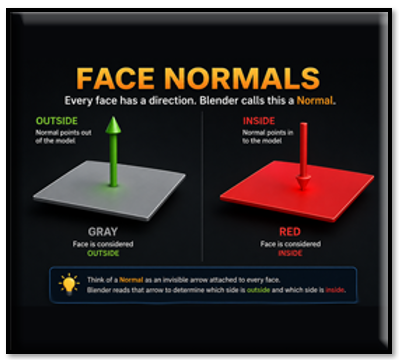
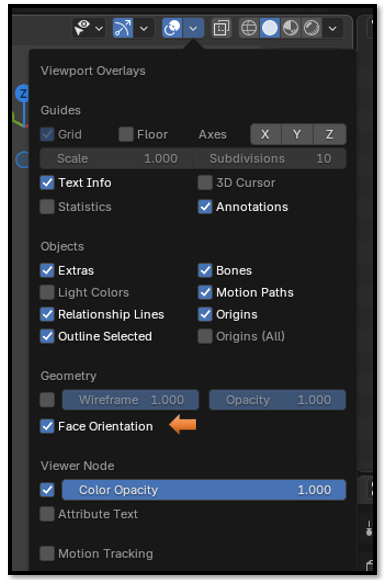
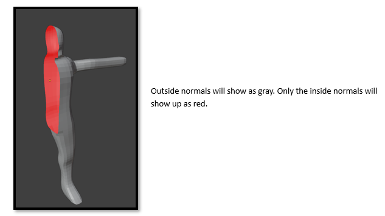
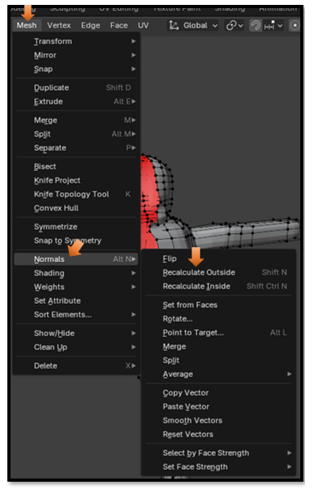
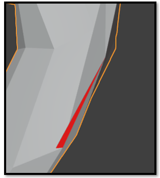
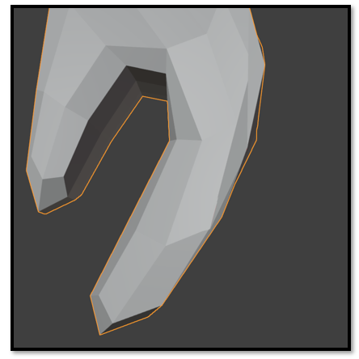

~5 Checking Normals with Face Orientation~
10/5/2026

What are Normals?
Normals determine which side of a face is considered outside and which side is inside.
In Blender 5, the easiest way to visualize normals is by using the Face Orientation display.
Blender uses normals to determine how light, shading, and many modifiers interact with the surface of a model.
Think of a Normal as an invisible arrow attached to every face. Blender reads that arrow to determine which side of the face is outside and which side is inside.
How to turn on Normals
Go to Viewport Overlay’s tab located at the top left of viewport. Check the box that says Face Orientation


How Fix broken Normals.

I found a small sliver of flipped normals. It was so small I barely noticed it.

Step 1 — Recalculate the Entire Mesh
This is the first thing I would do.
- Go into Edit Mode.
- Press A to select everything.
- Press Shift + N (Recalculate Outside).
Now look again.
If the red disappears...
If the red face disappears, your normals have been corrected.

Watch It! Sometimes Shift + N will not fix every red face.
If a face is disconnected, duplicated, or has bad geometry, you may need to investigate the mesh further instead of simply recalculating the normals.